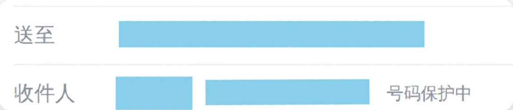
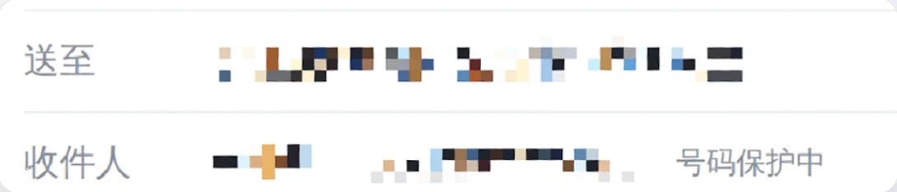

怎么用
选图，看一眼，导出。
-
01
选图
在首页选一张图，或者在相册里把图分享给「有码」。一次分享多张也行，逐张处理后一起导出。
-
02
看一眼
一两秒就识别完。天蓝色块是已经打码的，琥珀色虚线框是拿不准、等你确认的，点一下就能切换。漏掉的地方，用一根手指拖出一个框补上。
-
03
导出
按原图分辨率重新绘制，EXIF 一律不保留。还有圈出但没打码的内容，导出前会先提醒你。
识别范围
该遮的，先替你找出来。
文字由随包分发的 PP-OCRv5 识别，人脸和条码由 ML Kit 的离线模型识别。哪些算敏感信息交给规则判断，不交给模型：正则加校验位，每一条命中都说得出原因。
默认直接打码
- 电话
- 邮箱
- 人名
- 地址
- 取件码
- 银行卡号
- IBAN
- 护照号
- 社保号
- 密钥（API key）
- MAC 地址
- 人脸
- 能解码的二维码、条形码
默认只圈出，等你确认
- 快递单号
- 订单号、交易号等长数字串
- 日期时间
- 网址
- IP 地址
- 无法解码的疑似条码
疑似条码只在条码识别设为「宽松」时圈出。
每一类都可以在设置里改成「打码」「仅圈出」或「关闭」：文字按类型逐条设，人脸和条码各一项。
打码样式
六种样式，每一块码各用各的。
预览和导出用同一套渲染器，导出的就是你看到的。下面六张图裁自应用在样图上的真实渲染。
-
色块
不可还原
默认样式。颜色可以选预设、自定义，也能用吸管从图上取。
-
表情
不可还原20 个表情，底色可调，放一个或者排满一行。
-
抹除
不可还原用周围的颜色把区域填平。背景太复杂时改用色块。
-
马赛克
可能被还原
颗粒粗细可调，只能比默认更粗。
-
模糊
可能被还原高斯模糊，强度只能比默认更强。
-
马克笔
不遮盖内容半透明高亮，只做标记。颜色可调，浓淡最高 70%。
隐私
没有联网权限。
不是承诺「不上传」，而是在系统层面就不给这个进程开网络。识别、编辑、导出全在手机上完成，开着飞行模式也照常工作。
-
摘掉联网权限
ML Kit 的依赖会把
INTERNET和ACCESS_NETWORK_STATE带进 manifest，构建时把这两条移除。没有这条权限，进程就拿不到网络。 -
不申请运行期权限
选图走系统的 Photo Picker，应用只拿得到你选中的那几张，读不到相册里的其他图片。
-
构建时把关
构建任务会检查合并后的 manifest。除了清单里三条不涉及数据访问的声明，多出任何一条权限，构建直接失败。
-
干净导出
在原图分辨率上重新绘制、重新编码，EXIF 里的位置、机型、拍摄时间一律不保留。
合并后 manifest 里的全部权限
com.android.vending.BILLINGPlay 内购，留给以后上架的版本。购买在 Play 商店的进程里进行，开源版不连 Play Billing。com.google.android.apps.aicore.service.BIND_SERVICE「AI 复查」绑定系统的 AICore，模型在本机运行。moe.flinty.yomark.DYNAMIC_RECEIVER_NOT_EXPORTED_PERMISSIONandroidx 自动生成的 signature 级权限，其他应用无法获取。android.permission.INTERNET构建时移除android.permission.ACCESS_NETWORK_STATE构建时移除
更多功能
补漏、批量、水印，都在手机上做完。
-
手动补框
单指拖出一个框补上漏掉的地方，拖四个角调大小，双指缩放和平移。
-
批量处理
在相册里一次分享多张图，逐张处理后一起导出。
-
导出前提醒
还有圈出但没打码的内容，导出前先列出来，让你再确认一次。不需要的话可以在设置里关掉。
-
用途水印
在整张图上平铺一行字，例如「仅供办理签证使用」，被挪作他用时一眼就能认出来。颜色、角度、透明度和密度都能调。
-
AI 复查
在支持 AICore 的机型上，让本机的 Gemini Nano 把整页文字再读一遍。新发现的内容只圈出，不会自动打码。
-
跟随壁纸取色
主题色默认跟随系统壁纸（Android 12 及以上），也可以换成紫、蓝、青、绿、橙、红、粉中的一种。
开源
开源，全功能免费。
导出的图片不带水印，所有功能直接用。源代码、设计文档、模型评测和上架验收记录都在 GitHub 上。
如果有码帮到了你，欢迎打赏支持后续开发。应用里的打赏入口交给系统浏览器打开，应用本身仍然不联网。
问答
常见问题
该下载哪个安装包？
手机装 arm64-v8a 版，页面上的「下载 APK」就是它。x86_64 版是给电脑上的安卓模拟器用的。所有版本都在 GitHub Releases。
安装包为什么这么大？
文字识别、人脸和条码的模型，连同运行模型的 ONNX Runtime，都打包在安装包里。装好就能离线使用，之后不需要再下载任何东西。
怎么安装和升级？
用手机浏览器下载后点开安装。第一次从浏览器或文件管理器装应用时，系统会让你允许这个来源。安装包用的是固定签名，出了新版本下载后直接安装，就会覆盖旧版本。
支持哪些手机？
Android 10 及以上。从 Android 10 开始，应用读写自己创建的图片不需要存储权限，这是零权限的前提。目前只有安卓版。
图片会被上传吗？
不会。应用没有联网权限，图片只在手机上处理，导出的图片存进相册。详见隐私权政策。
以后会收费吗？
开源版全功能免费，导出不带水印。以后上架 Play 商店的版本会恢复内购：免费导出时右下角带一个小水印，一次性买断可以去掉。那也是唯一的付费项，其他功能不受限制。